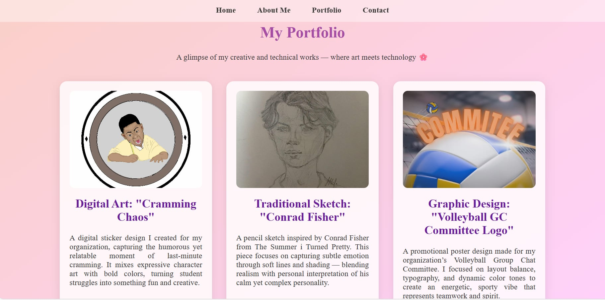
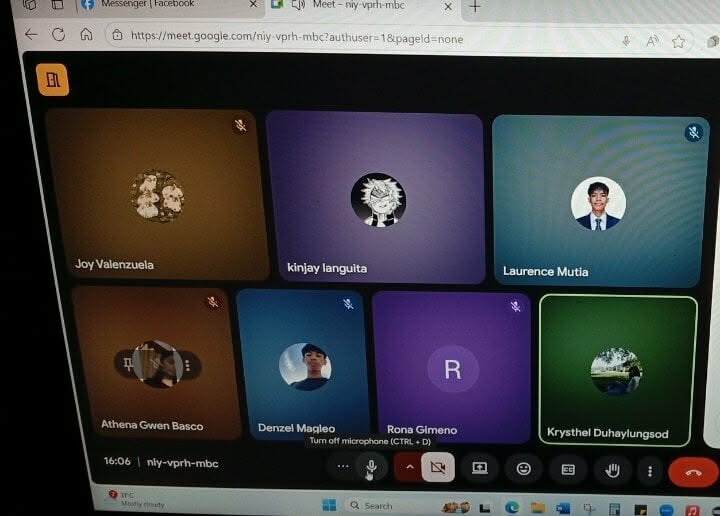
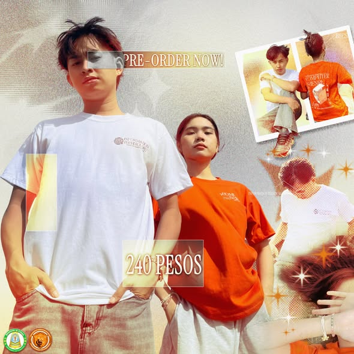
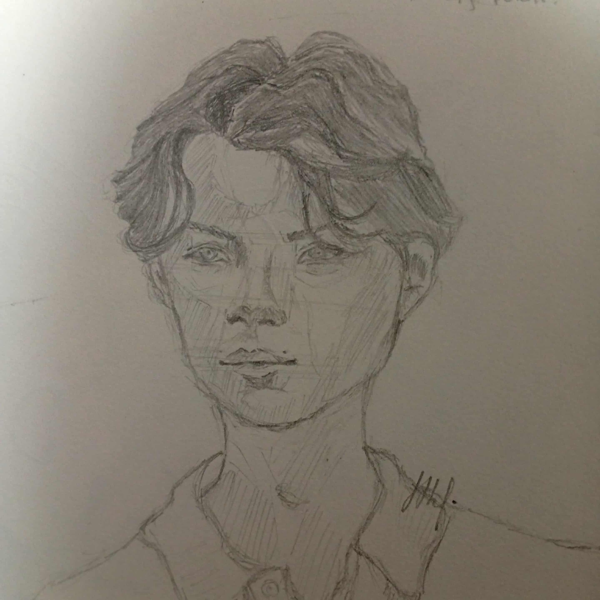
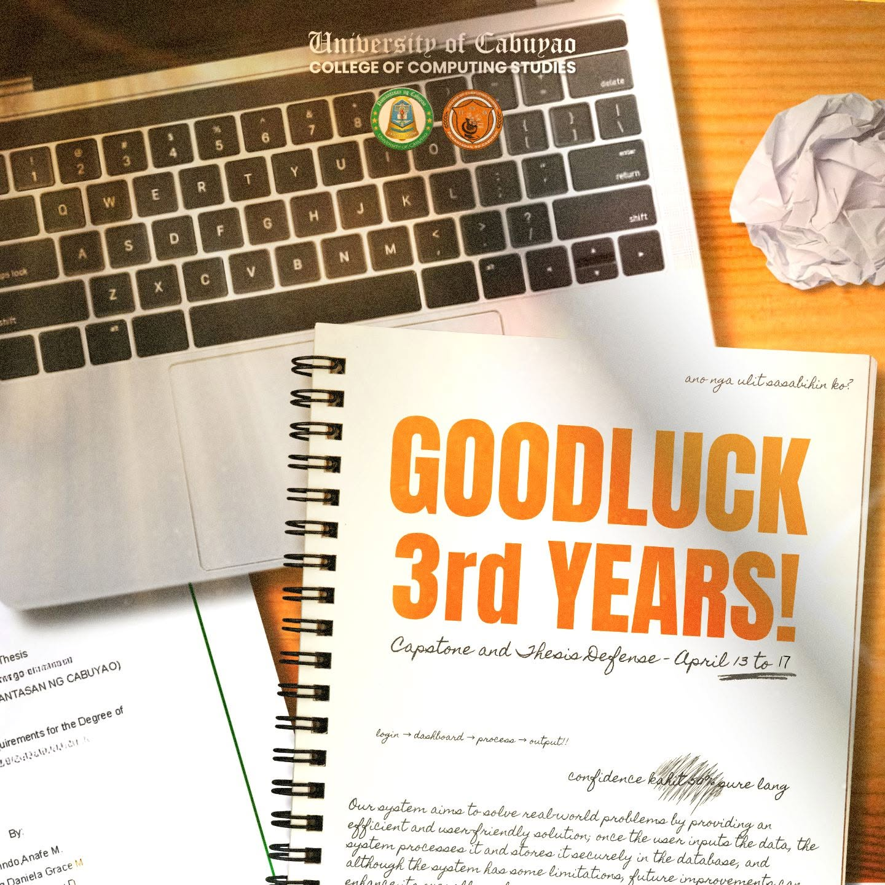
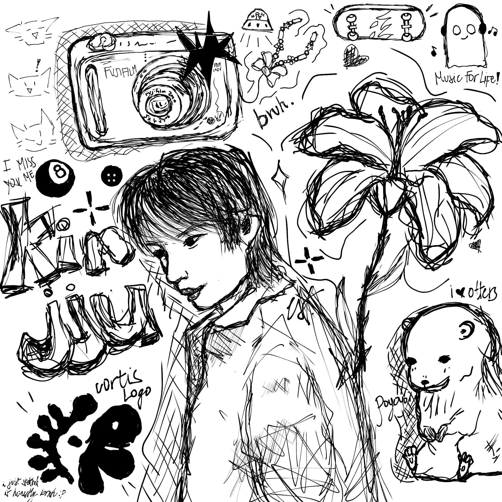
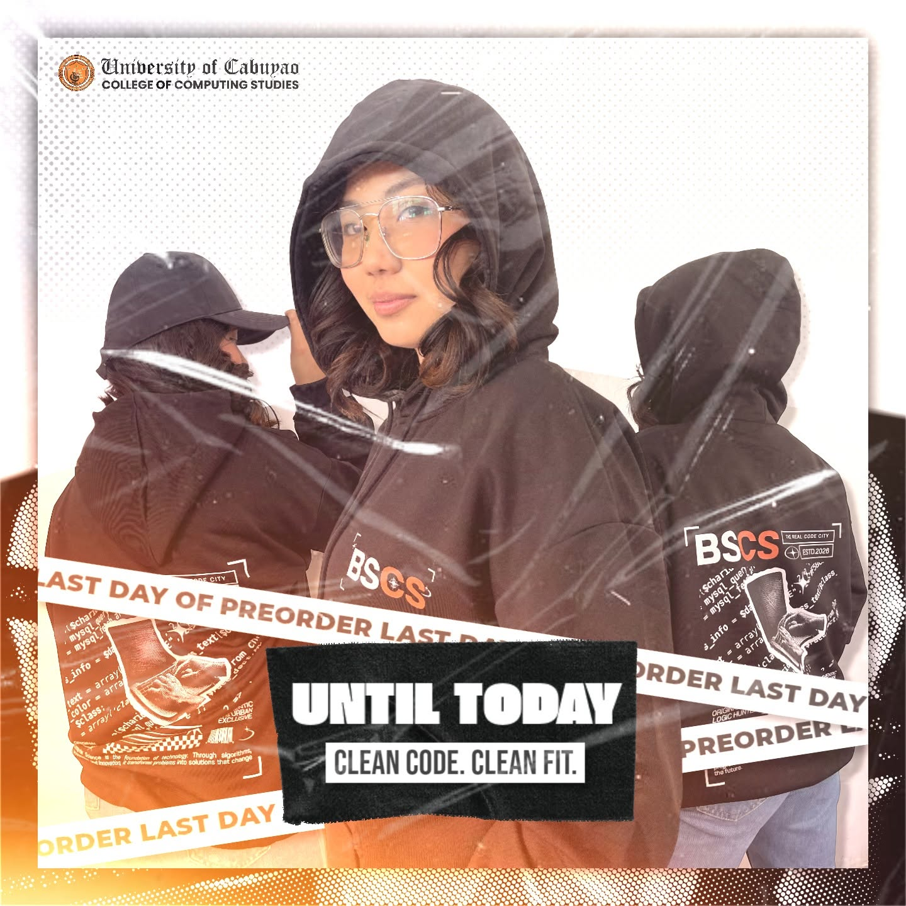
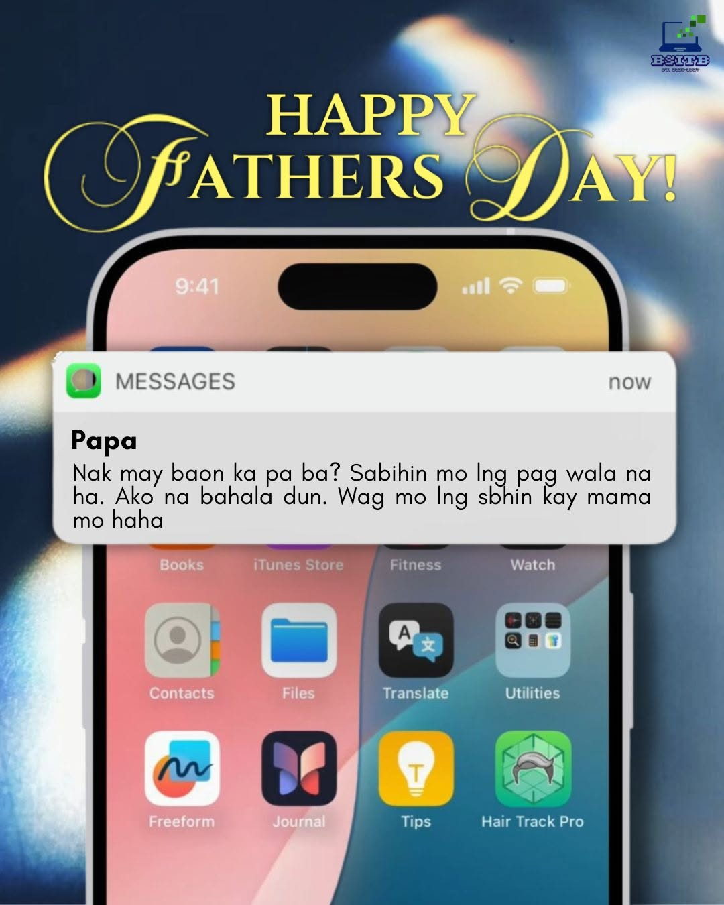
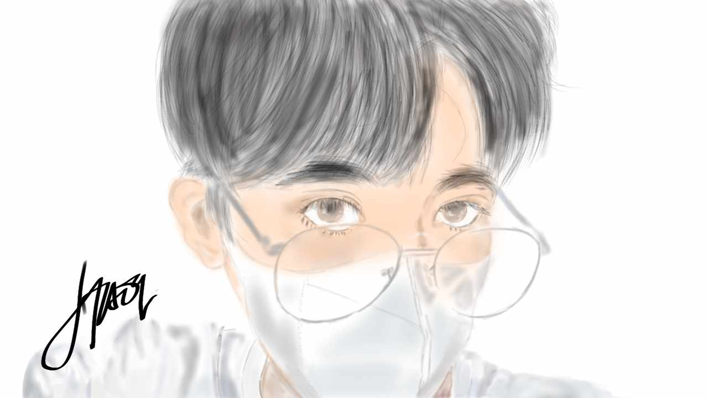

Bachelor of Science in Information Technology - 2nd Year
"Carpe Diem!"
Hi! I'm Krysthel Sumabat Duhaylungsod, currently a second-year Bachelor of Science in Information Technology (BSIT) student at the University of Cabuyao. I'm passionate about building meaningful connections, joining organizations to meet new people and gain valuable experiences, and expressing creativity through design. I enjoy learning new skills, collaborating with others, and continuously challenging myself to grow both personally and professionally.
Personal Information: I am an 18-year-old sophomore at the University of Cabuyao with a wide range of creative and personal interests. I enjoy listening to music, sketching, creating publication materials, writing, reading, designing and crafting, singing, watching movies, and editing photos, videos, and vlogs. What motivates me most is my passion for helping others and my desire to live a life with no regrets by making the most of every opportunity.
Educational background:
| School | Program/Track | Years | Roles / Involvement |
|---|---|---|---|
| University of Cabuyao | Bachelor of Science in Information Technology (BSIT) | 2025 – Present |
|
| Cabuyao Integrated National High School (CINHS) | STEM Academic Track | 2022 – 2025 |
|
| Gulod National High School (GNHS) | ICT Strand Graduate | 2016 – 2022 |
|
Career goal: After graduating, I aspire to work abroad and build a career as a Full Stack Developer or a UI/UX Engineer. I aim to combine my technical knowledge with my creativity to develop innovative, user-centered digital solutions while continuously expanding my skills and making a meaningful impact in the technology industry.

Comfortable building pages with HTML and CSS, from layout structure to styling and simple responsive design.

I enjoy directing films, especially through on-the-spot roleplays. I like bringing stories to life by guiding scenes and helping actors express the emotions and message of the story.

I create merchandise designs for my department. I enjoy designing creative and meaningful visuals that represent our organization and make our merchandise appealing and unique.

I love sketching the people I admire, care about, or know. Drawing them allows me to express my appreciation while improving my artistic skills.

I create posts and layouts for my organizations, keeping designs clean, on-brand, and easy to read.

I enjoy directing films, especially through on-the-spot roleplays. I like bringing stories to life by guiding scenes and helping actors express the emotions and message of the story.
Project 1 — Publication Material

Project 2 — Merch Design

Project 3 — Publication Material
Project 4 — Dept. Shirt Designer
Project 5 — Sketch
Project 6 — First Website

Project 7 — Digital Art
Project 8 — Digital Art